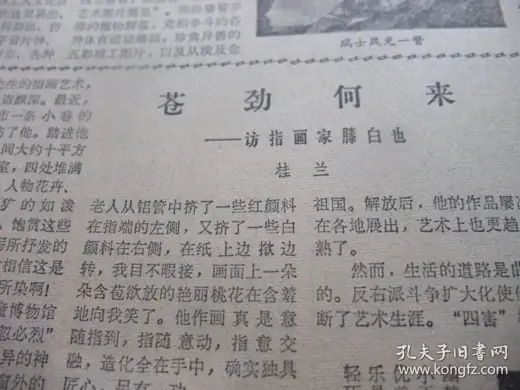

苍劲何来——访指画家滕白也
访问原网页 ↗Visit original website ↗

S252 · 桂兰，《文汇报》 · 1979-12（合订本；具体日未见报头）
桂兰登门访问，亲眼看见滕白也从铝管挤出红白两色，分置指尖两侧，在纸上撇转成桃花。An interviewer signing as Guilan watched Teng put red and white pigments on opposite sides of a fingertip and turn his finger on the paper to make peach blossoms.
馆藏图像与原文Archived images and documents

来源页摘录Source-page excerpt
原版合订本：文汇报(1979年12月)记有机化学家黄维垣、朱敏慎小说、江树峰诗、记小学教师高秋峰、刘棣怀追悼会、周熙历史小说、章洁思《怀念我的爸爸靳以》、记全国劳模陈安乐和他的妻子章乐芳、育才中学老校长段力量佩(图)、记金山农民女画家、记越剧小生刘觉、记上棉二十八厂长潘训曾、青年小提琴家唐韵潘寅奏音乐会、记魏文达教授、罗稷南追悼会、徐岳小说、记中学生王毓千张祖年、上海全国劳模简介、访指画家滕白也等_孔夫子旧书网
…授、罗稷南追悼会、徐岳小说、记中学生王毓千张祖年、上海全国劳模简介、访指画家滕白也等等报纸相关商品，欢迎您到孔…
原始网址Original URL
https://book.kongfz.com/10495/6700600072/报纸日期与照片边界Date and limits of the photograph
合订本著录为1979年12月。第25张照片可读题名、桂兰署名及红白颜料画桃花的现场描述；右栏可辨出反右扩大化与艺术生涯中断的记述，但后文被裁掉。第24张是劳动模范介绍，第26、27张是漫画版及其局部，不是采访续文。第26张的1979年12月31日报头不能作为本篇日期。The volume is catalogued as December 1979. Photo 25 verifies the byline and demonstration; its right column refers to the anti-rightist campaign and an interrupted artistic career, but cuts off the continuation. Photo 24 covers model workers; photos 26 and 27 show cartoons, not the interview. Their 31 December date cannot be assigned to this article.